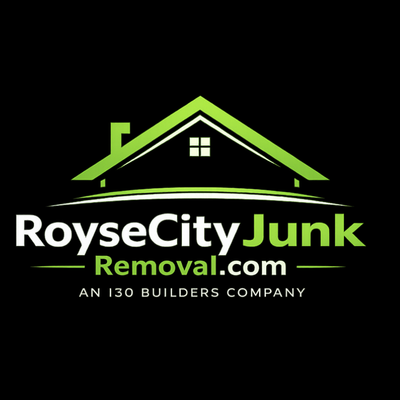

About Royse City Junk Removal
Royse City's locally owned, full-service junk removal company — proudly serving our community as a division of I30 Builders.
Making Junk Removal Easy, Honest, and Affordable for Every Customer in Northeast Texas
We're not just a junk removal company — we're your neighbors. We built Royse City Junk Removal to bring honest, professional service to the communities of Hunt County, Rockwall County, and beyond.
Royse City's Trusted Junk Removal Experts
Royse City Junk Removal was founded in 2017 to fill a real need in our fast-growing community — professional, reliable, and fairly-priced junk removal for the families and businesses of Hunt County, Rockwall County, and Northeast Texas.
As a division of I30 Builders — a trusted construction and property services company headquartered right here in Caddo Mills — we bring the same commitment to quality and honest work that has defined the I30 Builders brand to every junk removal job we take on.
Whether you need a single item removed or a complete estate cleanout, we treat your property with respect, give you an honest price, and don't leave until you're satisfied. That's our promise — and it's why our customers keep coming back and referring their friends and neighbors.
"We live here. This is our community. We treat every job like we're working for a neighbor — because we are."
2017
Licensed, Insured & Committed to Excellence
Every customer deserves the assurance of working with a properly licensed and insured junk removal company.
What We Stand For — On Every Single Job
These aren't just words — these are the principles our crew lives by every day across Royse City, Caddo Mills, Rockwall, and beyond.
Honesty First, Always
We give you an upfront, firm price before we start. No hidden fees, no bait-and-switch. You pay exactly what we quoted — every time.
Community Is Everything
We live in Royse City and the surrounding area. We care deeply about our community — and that shows in how we treat every customer.
Excellence in Every Job
Whether it's a single couch or a full estate cleanout, we bring the same professionalism, efficiency, and attention to detail every time.
Environmental Responsibility
We recycle, donate usable items to local charities, and properly dispose of everything else. Texas is beautiful — let's keep it that way.
Safety & Professionalism
Our trained, background-checked team is fully insured. We protect your property, our crew, and everyone we work with on every job.
Reliability You Can Count On
We show up when we say we will. We work efficiently. We complete jobs on schedule. Your time is valuable — we respect it.
An I30 Builders Company
Royse City Junk Removal is proudly owned and operated as a division of I30 Builders — a trusted construction and property services company headquartered at 2346 FM 35 in Caddo Mills, TX.
With I30 Builders' extensive background in construction and property services throughout Hunt County and Rockwall County, we bring an unusually high standard of professionalism to junk removal. We understand job sites, property values, and client expectations at a deeper level than a typical junk company.
When you hire Royse City Junk Removal, you're supporting a locally rooted business that is invested in the long-term success of this region. We're here to stay — and we want to earn your repeat business and your referrals.

Caddo Mills TX 75135
Proudly Serving 20+ Communities in Northeast Texas
We cover approximately 20 miles around Royse City, serving Hunt County, Rockwall County, Collin County, and Kaufman County.